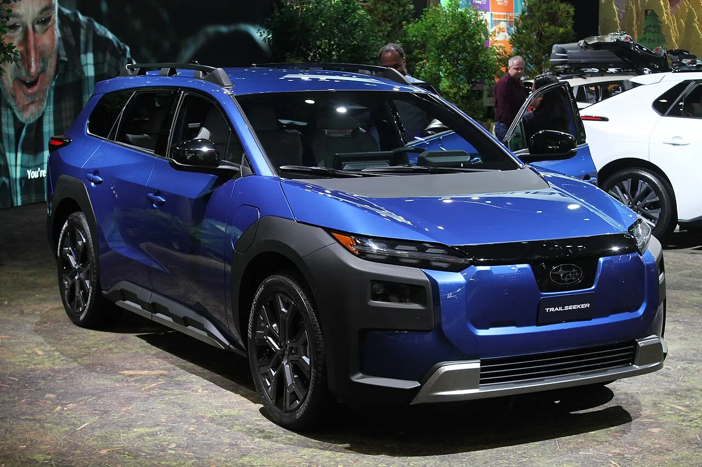
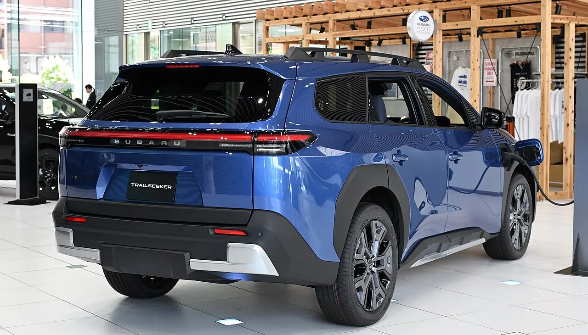
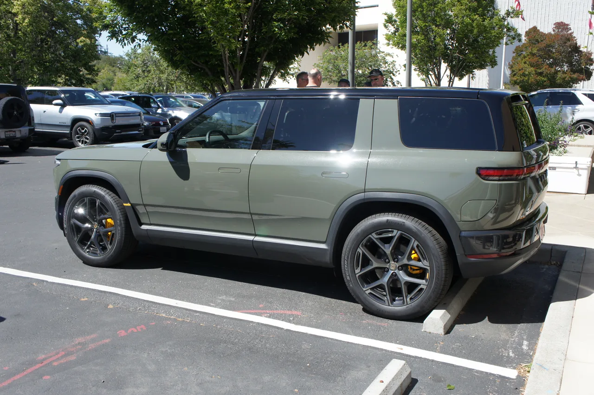

▲ 리비안 R2는 4만 6,485달러부터 시작한다 ⓒ Wikimedia Commons (CC BY-SA 4.0)
비슷한 크기의 전기 SUV 두 대가 있습니다.
둘 다 험한 길을 갈 수 있다고 말합니다.
가격은 6,500달러, 우리 돈으로 약 900만 원 차이입니다. 이 차이가 무엇을 사는 돈인지 따져봤습니다.
1. 가격 — 시작점과 끝점
| 모델 | 시작 | 최상위 |
|---|---|---|
| 스바루 트레일시커 | $39,995 | $46,855 |
| 리비안 R2 | $46,485 | $57,990 |
눈여겨볼 지점이 있습니다. 트레일시커의 최상위 트림 가격과 R2의 시작 가격이 거의 같습니다.
즉, 예산 4만 6,000달러 선에서 선택이 갈립니다. 옵션을 다 채운 트레일시커를 살 것인가, 기본형 R2를 살 것인가.
2. 출력과 주행거리
| 항목 | 트레일시커 | R2 |
|---|---|---|
| 구성 | 듀얼모터 고정 | 싱글/듀얼 선택 |
| 출력 | 375마력 | 350 ~ 656마력 |
| 0-96km/h | 4.4초 | 3.6 ~ 5.9초 |
| 주행거리 | 274 ~ 281마일 | 330 ~ 345마일 |
📍 R2의 범위가 넓다는 것의 의미
R2는 350마력에서 656마력까지 폭이 넓습니다. 기본형은 트레일시커보다 느립니다(5.9초). 대신 최상위는 3.6초로 훨씬 빠릅니다. 반면 트레일시커는 375마력 하나로 통일돼 있어 어느 트림을 사도 성능이 같습니다.
주행거리에서는 R2가 앞섭니다. 330~345마일 대 274~281마일로, 약 60마일 차이입니다. 장거리 주행 비중이 높다면 이 차이가 실제 사용에 영향을 줍니다.

▲ 스바루 트레일시커는 3만 9,995달러부터 시작한다 ⓒ Wikimedia Commons (CC BY 4.0)
3. 험로 성능 — 여기가 갈림길
| 항목 | 트레일시커 | R2 |
|---|---|---|
| 지상고 | 8.5인치 | 최대 9.6인치 (세미액티브 서스펜션) |
| 구동 | AWD 기본 | 싱글/듀얼 선택 |
| 제어 | X-모드 트랙션 컨트롤 | — |
| 접근각 | — | 23° (퍼포먼스 트림) |
| 이탈각 | — | 26° (퍼포먼스 트림) |
지상고 1.1인치 차이는 실제 험로에서 체감됩니다. 다만 R2의 9.6인치는 세미액티브 서스펜션을 적용했을 때의 수치입니다. 기본형이 아닙니다.
트레일시커의 강점은 다른 곳에 있습니다. AWD가 전 트림 기본이고, 스바루가 오래 다듬어온 X-모드가 들어갑니다. 기본형을 사도 사륜구동입니다.
4. 실내 공간 — 숫자가 엇갈린다
| 항목 | 트레일시커 | R2 |
|---|---|---|
| 기본 적재 | 31.3 cu-ft | 28.7 cu-ft |
| 2열 폴딩 시 | 74 cu-ft | 79.4 cu-ft |
| 2열 레그룸 | 35.3인치 | 40.4인치 |
표가 엇갈립니다. 기본 적재량은 트레일시커가 넓고, 시트를 접으면 R2가 넓습니다.
📍 진짜 차이는 2열 레그룸
40.4인치 대 35.3인치, 약 5인치(13cm) 차이입니다. 이 정도면 뒷좌석에 성인이 탈 때 체감이 확연히 갈립니다. 가족용으로 쓸 계획이라면 이 한 줄이 가장 중요할 수 있습니다.

▲ 트레일시커는 기본 적재량에서 앞선다 ⓒ Wikimedia Commons (CC0)
5. 6,500달러를 더 낼 만한 경우
CarBuzz의 결론은 이렇습니다. R2의 추가 비용은 올터레인 타이어와 세미액티브 서스펜션 같은 오프로드 장비, 그리고 상당히 높은 출력으로 돌아온다는 것입니다.
✅ 선택 기준 정리
· R2가 맞는 경우 — 장거리 주행이 많다(주행거리 60마일 우위), 뒷좌석을 자주 쓴다(레그룸 5인치 우위), 험로 장비가 필요하다
· 트레일시커가 맞는 경우 — 예산이 4만 달러 초반이다, AWD 기본이면 충분하다, 기본 적재량이 중요하다
· 주의 — R2의 9.6인치 지상고와 656마력은 상위 트림 기준입니다
· 참고 — 두 차 모두 국내 정식 출시 계획은 없습니다
마지막 항목을 덧붙입니다. 리비안은 국내에 상표를 등록해둔 상태이지만, 진출 여부는 확정되지 않았습니다.

▲ R2는 주행거리와 2열 공간에서 앞선다 ⓒ Wikimedia Commons (CC BY-SA 4.0)

▲ R2는 형님 격인 R1S 아래에 놓이는 보급형 모델이다 ⓒ Wikimedia Commons
6. 정리
스바루 트레일시커는 3만 9,995~4만 6,855달러, 리비안 R2는 4만 6,485~5만 7,990달러입니다. 기본형 기준 약 6,500달러 차이입니다.
R2는 주행거리(330~345마일)와 2열 레그룸(40.4인치)에서 앞섭니다. 트레일시커는 AWD 기본과 기본 적재량 31.3 cu-ft가 강점입니다.
6,500달러가 값어치를 하는 조건은 분명합니다. 장거리 주행이 잦고, 뒷좌석을 자주 쓰고, 실제로 험한 길을 간다면 R2입니다. 그렇지 않다면 트레일시커의 가격이 설득력을 갖습니다.